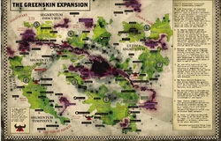
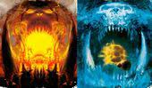
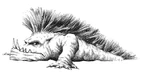

Зелёная волна

«Юдишки думают, што Галактику парвало надвое из-за богов Хаоса. Хаоситики и остроухие считают так же. А правда тут в том, што все ани ашибаюцца. Я прарок Waaagh!, и я гаварю вам: эта штука, што рвёт Галактику папалам, — бальшая и зилёная ухмылка Горка! А пачиму он ухмыляицца, парни? Патаму шта пришло наше время! Горк лыбицца, патаму шта настал час Орка — и мы растопчим все звёзды в лепёшку! Waaagh!»
– Газгкулл Трака
Горк и Морк

Горк (жестокий, но хитрый)
Справедливости ради нужно сказать, что оба орочьих божества, по сути, являются повелителями войны, хотя Горку этот титул подходит больше. Себе в покровители его избирают ваиводы и нобы, Гоффы и Змеекусы, да и, по большому счёту, все орки, кому по душе затоптать какого-нибудь вражину безо всякой лишней «вазни». Горк — это свирепая лавина, яростная буря крушащих кулаков, лягающих ног и клыков, обнажённых в нескончаемом зверином рыке. Он — средоточие тяги к насилию всех зеленокожих, и его разудалая воинственность придаёт оркам силы неизменно идти вперёд.
Морк (хитрый, но жестокий)
Когда мех загорается желанием смастерить какую-нибудь новую хитроумную штуковину, на Кровавого Топора нисходит внезапное стратегическое озарение, а Смерточереп замечает отличную возможность ударить противника в спину — значит, здесь постарался Морк. Пусть ему и не чуждо бессмысленное насилие, Морк всё же бог лукавства. Он — навязчивая идея в голове у каждого необычного парня, подлый блеск в глазах любого гретчина и острозубая усмешка коммандос за миг до того, как он выскочит из засады. Морк воплощает в себе звериное коварство орков и радуется всякий раз, когда его расе удаётся шокировать, удивить или обвести вокруг пальца незадачливого противника.
Сквиг

Сквиговые звери, более известные как сквиги (англ. squigs) — простейшая форма оркоидов. Существует множество разновидностей сквигов, каждая так или иначе выполняет ту или иную роль в экосистеме зеленокожих, развив странные симбиотические отношения с расой оркоидов. Так же являются основным источником еды для орков, наравне с орочьими грибами.